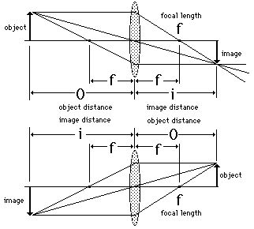
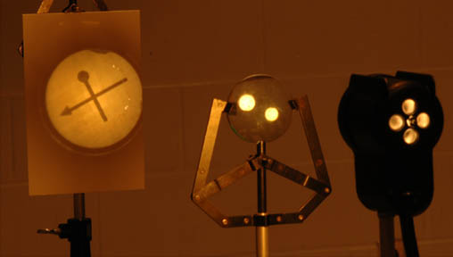
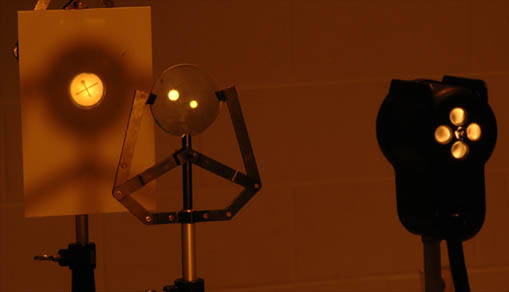

Conjugate Points
|

|
The object point and image piont of a lens system are said to be conjugate points. Since all the light paths from the object to the image are reversible, it follows that if the object were placed where the image is, an image would be formed at the original object position.
|


The two photographs above show conjugate images formed by a lens of focal length 15 cm. In the top photo, the object distance is 23 and the image distance 43 cm, showing a magnification of -1.9. In the bottom photo, the distances are reversed giving a magnification of -0.54 associated with the shorter image distance.
|
Index |